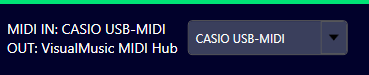

Visual VisualStudio

Por lazer, criei um interpretador de acordes MIDI e visualizador de imagens, formato em que salvo minhas músicas cifradas!
Desenvolvi uma versão legada para Windows usando Windows Forms, mas como o sistema executa muitos processos junto com o Kontakt, resolvi criar também para macOS com Avalonia. O resultado ficou tão bom que refiz a versão para Windows, desta vez usando WPF (imagem acima).
É possível personalizar a cor e a transparência dos textos, posicionando-os sobre a imagem sem prejudicar a leitura. Clicando em Hold Notes, somente as tríades não serão exibidas invertidas , recurso interessante para Estudantes de música, pois a cifra é mostrada como um acorde normal, sem inversões.
Em destaque, a cifra é interpretada conforme tocamos no teclado via MIDI. O VisualStudio reconhece mais de 3.500 acordes, inclusive invertidos, também exibindo abaixo a composição de cada acorde, de acordo com as notas tocadas.
À direita, aparece um possível candidato a acorde, ou uma segunda interpretação do programa. Pode ser o mesmo acorde com nome diferente ou algo próximo, mas nem sempre correto — o que vale é o primeiro. Por exemplo, pode mostrar Am7/C e ao lado C6, pois as notas são praticamente as mesmas.
Você pode abrir uma imagem e clicar em "Acorde Sobre". O acorde (apenas ele) ficará do tamanho, cor e transparência que você definir, sobre a imagem, como mostrado abaixo.

Note que já alterei a cor de fundo e do acorde. Os controles somem após alguns segundos sem movimentar o mouse, deixando a tela exclusiva para a imagem e o acorde. Basta mover o mouse para que os controles reapareçam.
Com um arquivo de imagens carregado, basta pressionar as setas do teclado para navegar entre as imagens. À direita de "Chord A-" está o título da música (arquivo aberto). Clicando na seta ao lado, você pode selecionar outras músicas (imagens do diretório).
A imagem abaixo mostra meu dispositivo MIDI em MID IN (meu teclado CASSIO USB-MIDI), previamente selecionado para receber os acordes via cabo MIDI. Logo abaixo, em MID OUT, está "VisualMusic MIDI Hub", a porta que o VisualStudio utiliza para repetir os sinais MIDI.
Caso precise de uma porta extra para conectar seu Kontakt ou DAW, baixe o programa loopMIDI no link abaixo:
Download loopMIDIDisponível apenas para Windows. No macOS não é necessário, e em breve não será mais para Windows (hoje: 27/06/2025).
Para configurar sua porta, selecione Configure loopMIDI/Setup, insira em "New port-name": VisualMusic MIDI Hub e clique em "+" para criar a porta, que será usada no Kontakt ou DAW, conforme destacado na imagem abaixo.
 Link para meu outro programa, Toca Sample
Link para meu outro programa, Toca Sample